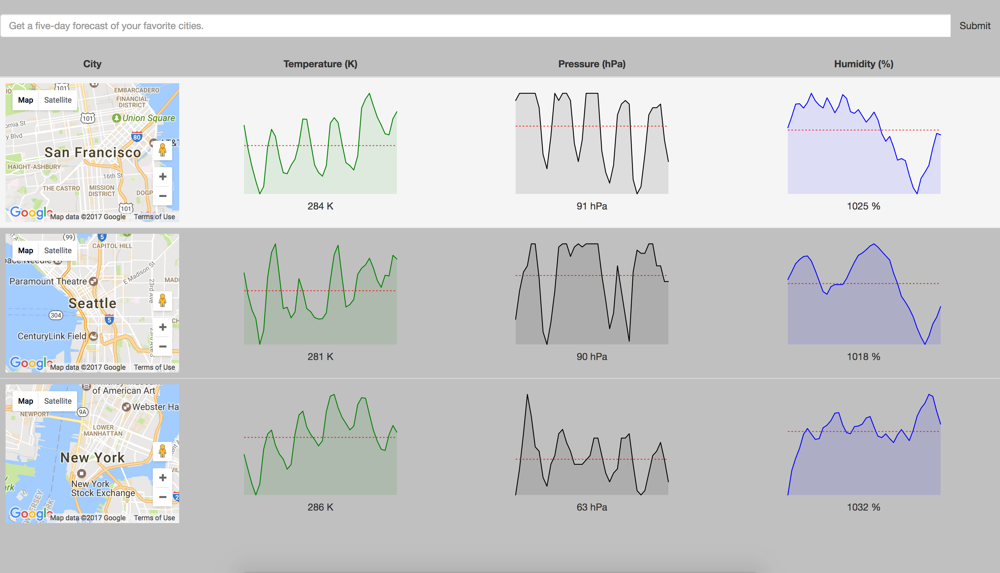

<div class="opacityLayer">  
     <p class="opacityParagraph"> RGB game, Javascript  practice. </p>
   <div class="thumb"> <a href="https://github.com/tonyn4444/weather-forecast-project"> </a><p></p></div></div>


<div class="opacityLayer">  
     <p class="opacityParagraph">  </p>
   <div class="thumb"> <a href="https://github.com/tonyn4444/youtube-search-project"> </a><p></p></div></div>

   <div class="opacityLayer">  
     <p class="opacityParagraph">  </p>
   <div class="thumb"> <a href="https://github.com/tonyn4444/new-eden-faces-practice"> </a><p></p></div></div>

<div class="opacityLayer">  
     <p class="opacityParagraph">  </p>
   <div class="thumb"> <a href="http://tonynguyen-portfolio.herokuapp.com/"> </a><p></p></div></div>

<div class="opacityLayer">  
     <p class="opacityParagraph">  </p>
   <div class="thumb"> <a href="https://patatap-clone-xd.herokuapp.com/"> </a><p></p></div></div>

<!-- 
<div class="opacityLayer">  
     <p class="opacityParagraph">  A Javascript calculator made using Bootstrap and no eval() </p>
   <div class="thumb"> <a href="https://codepen.io/Hyde87/full/jyqxGp/"> </a><p></p></div></div>

  <div class="opacityLayer">  
     <p class="opacityParagraph"> Javascript clocks made using a combination of vanilla JS and CSS transitions and transforms. </p>
   <div class="thumb"> <a href="http://codepen.io/Hyde87/full/LbBBRd/"> </a><p></p></div></div>
   

<div class="opacityLayer">  
     <p class="opacityParagraph"> A gallery of my doodles made with Masonry JQuery Plug-In. </p>
   <div class="thumb"> <a href="https://sergioca87.github.io/Gallery/"> </a><p></p></div></div>


   <div class="opacityLayer">  
     <p class="opacityParagraph"> A simple mini-app to get the code of each keyboard key.  </p>
   <div class="thumb"> <a href="http://codepen.io/Hyde87/full/LbBdBg/"> </a><p></p></div></div>

 <div class="opacityLayer">  
     <p class="opacityParagraph"> A shop mini-app. </p>
   <div class="thumb"> <a href="http://codepen.io/Hyde87/full/bgNGpM/"> </a><p></p></div></div>


      <div class="opacityLayer">  
     <p class="opacityParagraph"> Keyboard drums, a project made following a Wes Bos tutorial which I adapted further (visually and changing some of the behaviours.)  </p>
   <div class="thumb"> <a href="http://codepen.io/Hyde87/full/RoBMVv/"> </a><p></p></div></div>
   

     
     <div class="opacityLayer">  
     <p class="opacityParagraph"> A study on Local Storage to save user inputs upon reloading a page. </p>
   <div class="thumb"> <a href="http://codepen.io/Hyde87/full/jVLjGO/"> </a><p></p></div></div>

    <div class="opacityLayer">  
     <p class="opacityParagraph"> A flexbox gallery using JQuery to create modals </p>
   <div class="thumb"> <a href="http://codepen.io/Hyde87/full/LbEaVJ">  </a><p></p></div></div>


<div class="opacityLayer">  
     <p class="opacityParagraph"> A shopping list app (Or a todo list in disguise if you prefer) </p>
   <div class="thumb"> <a href="http://codepen.io/Hyde87/full/bwNPaJ/"> </a><p></p></div></div>

   <div class="opacityLayer">  
     <p class="opacityParagraph"> JQuery Plug-Ins implementation  </p>
   <div class="thumb"> <a href="http://codepen.io/Hyde87/full/RoyQBE"> </a><p></p></div></div>

<div class="opacityLayer">  
     <p class="opacityParagraph"> Slidders study and Gradient Creator </p>
   <div class="thumb"> <a href="http://codepen.io/Hyde87/full/XNpwoV"> </a><p></p></div></div>


<div class="opacityLayer">  
     <p class="opacityParagraph"> An example of JQuery-UI.</p>
   <div class="thumb"> <a href="http://codepen.io/Hyde87/full/VKJMao/"> </a><p></p></div></div>


 -->